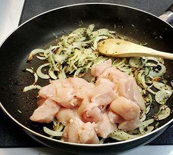
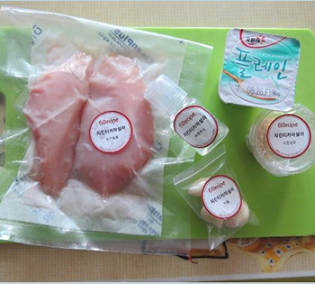
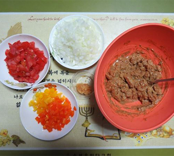

FOOD
사모사
사모사는 페르시아어 ‘산보삭(سنبوساگ sanbosag)’에서 유래한 것으로 보인다. 어떤 의미인지는 알려져 있지 않으며, 사모사와 유사한 형태의 음식들이 여러 나라에서 비슷한 이름으로 불린다. 아프가니스칸의 삼보사(sambosa), 터키의 삼사(samsa), 이란의 삼부사(sambusa), 일부 아랍 국가들의 산부삭(sanbusak, 중세 아랍서적에는 ‘sanbusaj’으로 표기) 등이 그 예이다. 사모사의 정확한 기원에 관해 알려져 있지 않으나 10세기 이전 중동 지역에서 먹기 시작해 인도로 전해졌을 것으로 보고 있다. 역사적으로 사모사가 처음 소개된 기록은 이란의 역사학자 아부르파들 베이아키 의 저서 『타리크-에 마수디(Tarikh-e Mas'oudi)』에서였다.
Recipe
-

재료
감자 2개(삶아서 준비),완두콩,당근,소금,칠리가루 가람마살라,큐민,코리안더,오일,양파,머스타드시드 고수,생강,닭가슴살 2덩이,물1/2컵 -
오일,1테일스푼,양파,머스타드씨드를 넣고 볶아줍니다 양파가 어느정도 익으면 고수 줄기 부분을 넣어 볶아줍니다.
-

어느정도 볶아지면 닭고기를 도막내서 같이 볶아준다.
-
생강을 넣어 볶아준후 물 반컵을넣고 중불로 20~30분간 졸여준다.
-
삶은 감자를 으깨고 가람마살라,큐민,코리안더,칠리,소금 완두콩,당근을 넣어준다. (이때 완두콩과 당근은 익힌것을 사용한다.)
-
잘 졸아든 치킨소는 으깨준다
-
감자믹스에 넣고 섞어주며 고수 잎 한줌을 넣어준다
-
만든 속을 춘권 ( 밀가루반죽 등등 ) 에 말아서 기름을 두르고 구워준다.
-
접시에 이쁘게 담는다.
치킨 티카 마살라
마살라 는 인도, 파키스탄, 방글라데시, 네팔 등의 요리를 포함하는 남아시아 요리에서 대체로 향신료들의 혼합을 일컫는 용어이다. 마살라는 고형 향신료로 만들 수도 있고 걸쭉하게 반죽된 향신료로 만들 수도 있으며, 향신료 자체에 마늘, 생강, 양파, 고추 등의 식재료를 섞어 만들기도 한다. 남아시아 요리에서 마살라는 음식의 맛을 내기 위해 광범위하게 사용되는데, 신선하지 않으면 질이 낮은 것으로 취급한다.
Recipe
-
재료
식용류,레몬쥬스,크림,요거트,코코넛 밀크,토마토 퓨레 닭가슴살,미니파프리카,토마토,다진생강,버터,베이비채소 마늘,캐슈넛,가람 마살라,커리용 가람 마살라,양파,난 -

닭가슴살을 한입크기로 썰어주고 다진생강,다진마늘 레몬쥬스,요거트,가람 마살라,소금.후추를 넣고 섞는다.
-
잘 섞어준 후 30분간 재운다.
-

양파.토마토,파프리카,마늘을 다져서 접시에 담아 준비한다.
-
식용류를 부은 후 양파를 볶는다. 양파가 투명해지면 마늘을 넣고 볶아준다. 양파와 마늘이 노릇해졌다면 버터를 넣고 볶아준다.
-
양파위로 다진 캐슈넛과 커리용 가람마살라를 넣어 볶아준다.
-
커리재료 위에 토마토와 토마토 퓨레,소금,코코넛밀크 닭고기,미니파프리카,소금/후추를 넣고 섞어준후 크림을 넣어 저어준다.
-
준비한 난 을 데워서 접시에 담아 완성한다.
짜이
차이(또는 짜이)는 인도를 비롯한 스리랑카, 방글라데시, 네팔 등의 남아시아 지역에서 차 음료를 일컫는 말이다. 보통은 차이라고 하면 마살라 차이(Masala chai, मसाला चाय)를 가리키는 것으로, 이것은 홍차에 우유·설탕·향신료 등을 넣어 만든 인도식 밀크티로 영어로는 스파이스드 티(spiced tea)라고도 한다. 인도 사람들은 하루를 차이로 시작해서 차이로 마감할 정도로 차이를 즐겨 마시며, 차이는 고급 호텔에서 뿐만 아니라 노점상에서까지 마실 수 있는 인도의 대중적인 음료이다. 커피를 선호하는 남부지방보다 북부지방에서 즐겨 마시는 편이다.
Recipe
-
재료
우유,설탕,짜이가루 -
우유를 냄비에 넣고 가열한다 ( 심하게 사열해서 끓어오르게 하는 것은 좋지 않다. )
-
짜이 가루를 한 스푼 넣고 충분히 우려낸 다음 다시 한 스푼을 넣고 우려내는 것을 반복한다
-
우유가 굳어지지 않도록 계속 저어준다.
-
약한 불이나 중간 세기 불에서 계속 끓여주면 색이 진하게 변한다.
-
색이변한 짜이를 채에 걸러준다.
-
컵에 담아 완성한다.